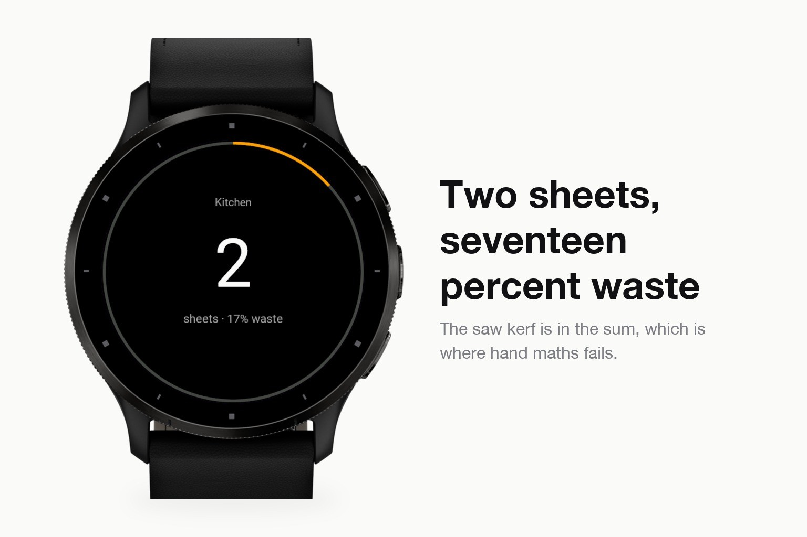
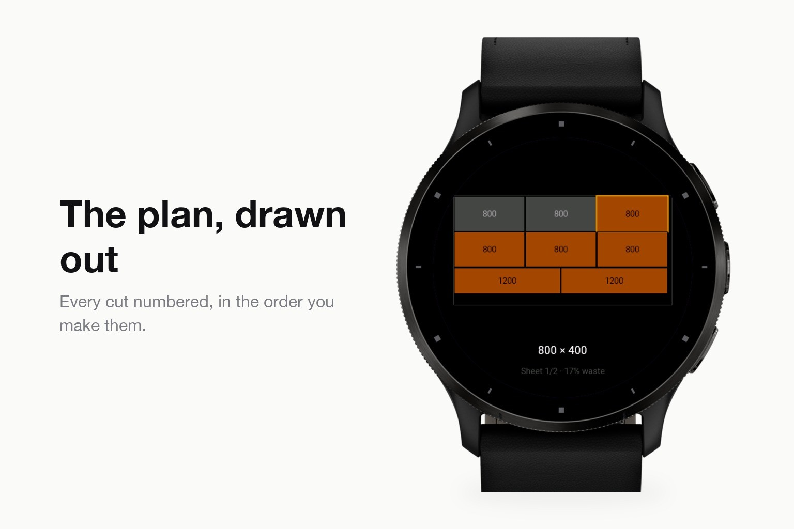
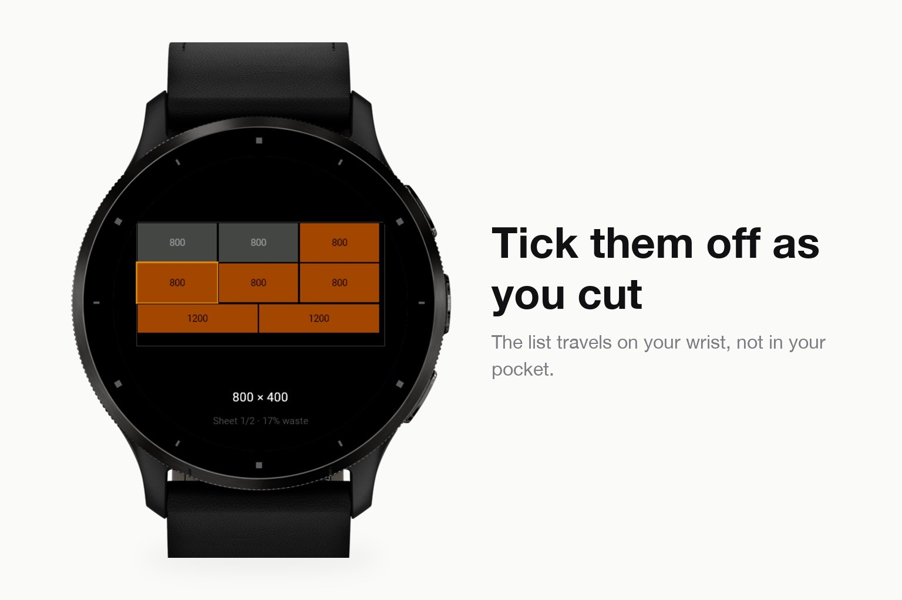

Everyday tools · Device app
Cut plan and sheet count for sawing.
Submitted to Garmin and awaiting review. The store page opens once it is approved.



On site the phone is in the van and your hands are dirty. Cutwise puts your cut list on your wrist and works out how many sheets or lengths you need, how to cut them, and how much waste is left over.
It is a real optimiser, not a calculator. For battens and studs it solves the one-dimensional cutting stock problem, for sheet goods the two-dimensional one, using first-fit-decreasing plus a bounded local search that improves the solution further. Saw kerf goes into every cut - forget it and the last piece is three millimetres short - and grain direction can be locked so a part is never rotated. The cut plan comes out sheet by sheet, cuts in order, with a tick box per piece.